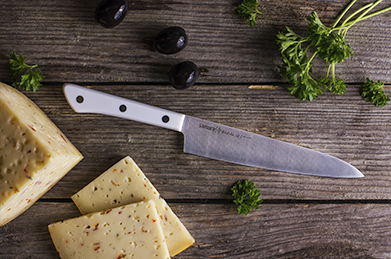

Ножи
Damascus 67
Очередной шедевр от Samuradamascus
Уникальные технологии изготовления ножейsakai
Премиальные японские ножи для кухниДамасские ножи
Кухонные ножи из дамасской стали: совершенство японских технологий
Кухонные ножи из дамасской стали – продолжение многовековых традиций оружейного дела и общепризнанный эталон поварского инструмента с уникальными свойствами и безупречным качеством. Известный с древнейших времен, этот материал применялся для изготовления самых лучших боевых клинков, которые всегда были символом особой прочности, остроты и долговечности.
И именно японцам удалось возродить секреты старинного мастерства и воплотить их в своей продукции, став абсолютными мировыми лидерами по производству ножей из дамасской стали, технология изготовления которой была разработана ими специально для кухонных ножей. Результат получился впечатляющим: совершенное и непревзойденное качество – лучшее в мире - достичь которого пока не удалось ни одному европейскому производителю.
Все ножи из дамасской стали